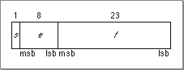

Legacy Document
Important: The information in this document is obsolete and should not be used for new development.
Important: The information in this document is obsolete and should not be used for new development.


About Floating-Point Data Formats
The IEEE standard defines several floating-point data formats, one required and the others recommended. IEEE requires that each data format have a sign bit (s), an exponent field (e), and a fraction field (f). For each format, it lists requirements for the minimum lengths of these fields. For example, the standard describes a 32-bit single format whose exponent field must be 8 bits long and whose fraction field must be 23 bits long. Figure 2-1 shows the IEEE requirements for the single format. (In this figure, msb stands for most significant bit and lsb stands for least significant bit.)
The only required data format is the 32-bit single format. A 64-bit double format is strongly recommended. The IEEE standard also describes two data formats called single-extended and double-extended and recommends that floating-point environments provide the extended format corresponding to the widest basic format (single or double) they support.
To conform to the IEEE requirements on floating-point data formats, the PowerPC Numerics environment provides three data formats: single (32 bits), double (64 bits), and double-double (128 bits). The single and double formats are implemented exactly as described in the standard. The double-double format is provided in place of the recommended double-extended format. IEEE requires that the double-extended format be at least 79 bits long with at least a 15-bit exponent. The double-double format is 128 bits long and has an 11-bit exponent. The double-double format is just what its name sounds like: two double-format numbers combined. The PowerPC assembly-language multiply-add instructions, which multiply two double-format numbers and add a third with at most one roundoff error, make implementing the double-double format much more efficient than implementing a true IEEE double-extended format. See Chapter 14, "Assembly-Language Numeric Operations," for more information on the multiply-add instructions.
Table 2-1 shows how the three numeric data formats correspond to C variable types. For more information about data types in C, refer to Chapter 7, "Numeric Data Types in C."
Names of data types PowerPC Numerics data format C type IEEE single float IEEE double double Double-double long double The IEEE standard also makes requirements about how the values in these data formats are interpreted. PowerPC Numerics follows these requirements exactly. They are described in the next section.